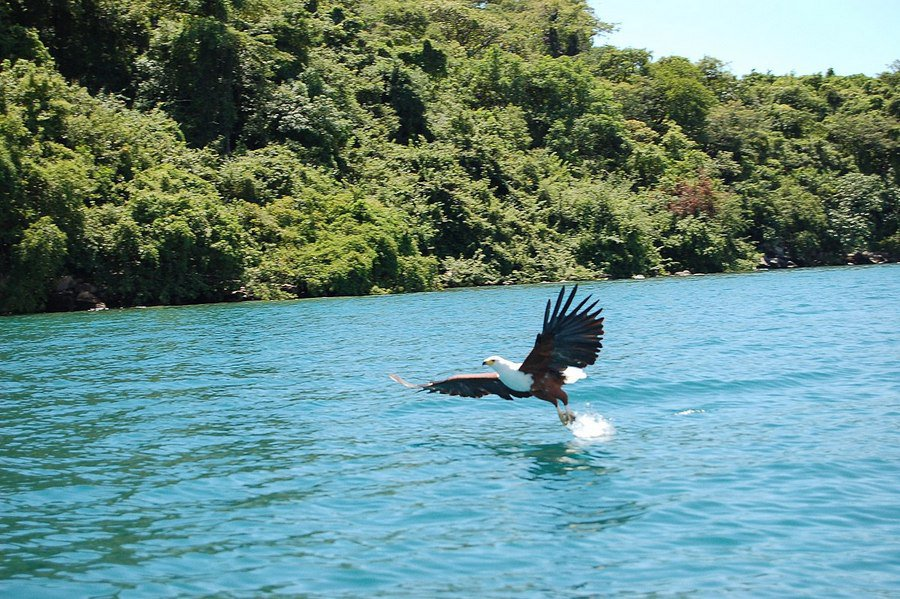
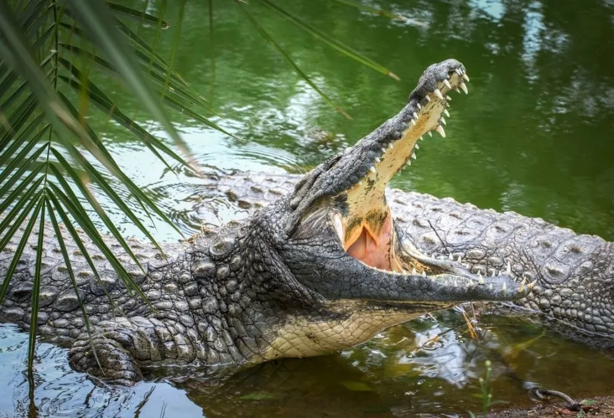
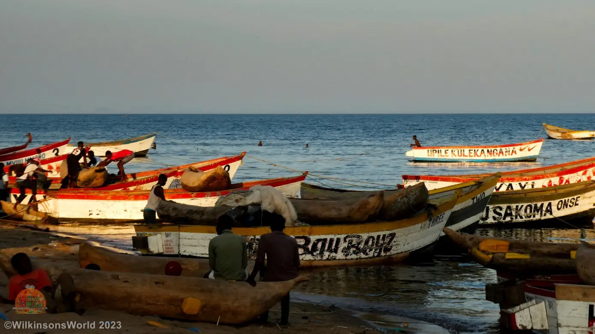

Fish Diversity
Lake Malawi is world-famous for its incredible fish diversity, especially cichlids.
Scientists estimate there are between 700 and 1,000 species, many of which are endemic (found nowhere else on Earth).
These fish are brightly colored, often compared to marine tropical fish, and are highly sought after for aquariums worldwide.
Beyond cichlids, the lake also supports catfish, sardines (usipa), and other species that are essential for local diets and trade.

Birdlife
The shores and wetlands of Lake Malawi provide habitats for a wide variety of birds.
African fish eagles are often seen swooping down to catch fish, creating iconic scenes.
Other species include kingfishers, cormorants, herons, and migratory birds that stop at the lake during their long journeys.
Why it matters: The birdlife not only contributes to the beauty of the lake but
also supports ecotourism and plays a role in the lake’s delicate ecosystem.

Mammals and Reptiles
Although the lake is best known for its fish, it also supports larger animals. In river mouths and swampy areas,
hippos can be seen wallowing in the water. Crocodiles are also found in some regions of the lake,
playing their role as natural predators.
Along the lake’s edge, monkeys and small mammals can often be spotted in the surrounding woodlands.

Conservation and Threats
Lake Malawi’s wildlife faces challenges. Overfishing, pollution, and
illegal fishing practices threaten fish stocks. Invasive species and climate change also put stress on the ecosystem.
To protect this unique biodiversity, areas such as the Lake Malawi National Park (a UNESCO World Heritage Site) have been established.
This park helps conserve the lake’s unique fish and other species for future generations.
Without conservation, Lake Malawi could lose its status as one of the most biodiverse freshwater lakes in the world